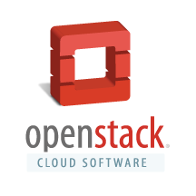
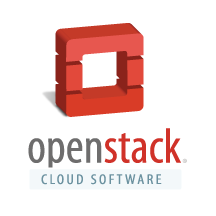
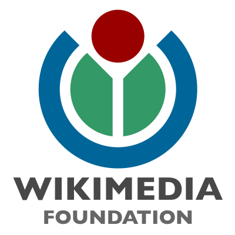
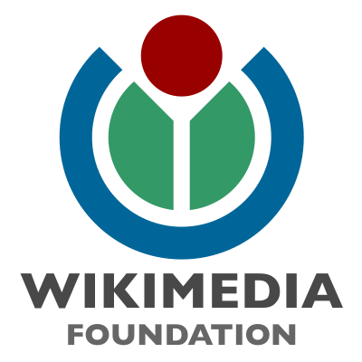

Outreachy helps people from groups underrepresented in free and open source software get involved. We provide a supportive community for beginning to contribute any time throughout the year and offer focused internship opportunities twice a year with a number of free software organizations. Outreachy is the successor of the Outreach Program for Women.
The current round of internships was open to women (cis and trans), trans men, genderqueer people, and all participants of the Ascend Project regardless of gender. We are planning to expand the program to more participants from underrepresented backgrounds in the future.
Participants
Congratulations to 30 interns who were accepted for May - August 2015 round of Outreachy! Congratulations to 4 interns, who applied for both Outreachy and Google Summer of Code or OpenDaylight Internship Program, and after coordination between administrators of both programs, were accepted for Google Summer of Code or OpenDaylight Internship Program!
Find out who is participating in this round!Sponsors
Outreachy is a project of Software Freedom Conservancy. The internships in the May - August 2015 round are generously sponsored by the following organizations and companies:
Ceiling Smasher

Equalizer
Promoters


Includers

 



 

 Become a sponsor!
Become a sponsor!
Partners
Software Freedom Conservancy provides organizational home for Outreachy.

GNOME Foundation provides infrastructure support for Outreachy.
Red Hat supports Outreachy by contributing its employee time towards the organization of the program.

Apply
The next round of Outreachy internships will open its application process in early September and have an application deadline in mid-October. The full-time internships will run from early December to early March. Coding, design, documentation and other projects will be available. The applicants will be asked to select a project with one of the participating organizations and collaborate with a mentor listed for that project to make a relevant contribution to the project during the application process. The organizations that will participate in the next round have not yet been determined, but starting to contribute to one of the organizations that participated in the past will help prepare to apply for an internship with any organization. Many of the mentors participating in the program are happy to offer informal mentorship any time throughout the year, however you need to review the information for the organization you are interested in to see if it has mentors available. Detailed information about the background for the program, requirements for participants, how to select a project, and how to make a contribution is available.
The accepted participants work remotely, while being guided by their mentor, and receive $5,500 stipend. It's expected that the participants are able to have the internship work be a primary focus during the internship dates and spend 40 hours a week on it.
Learn more!About
Outreachy is the successor of the Outreach Program for Women (OPW). OPW was inspired by Google Summer of Code and by how few women applied for it. The GNOME Foundation first started OPW with one round in 2006, and then resumed the effort in 2010 with rounds organized twice a year. In the May 2012 round, Software Freedom Conservancy joined OPW with one internship with the Twisted project. In the January 2013 round, many other free and open source organizations joined the program. For the May 2015 round, the program was renamed to Outreachy with the goal of expanding to engage people from various underrepresented groups and was moved to Software Freedom Conservancy as its organizational home.
This program is a welcoming link that connects talented and passionate newcomers with people working in free and open source software and guides them through their first contribution. Through Outreachy, participants learn how exciting and valuable work on software freedom can be, while helping us to build a more inclusive community.
Follow @outreachy on Twitter to get the latest news.
Donate
Please donate to Outreachy to help us run the program, fund interns, and support interns' travel to relevant free and open source software events. Software Freedom Conservancy, Inc., the organizational home of Outreachy, is a USA 501(c)(3) organization, and donations made to Outreachy are fully tax-deductible to the extent permitted by law.
PayPal To donate through PayPal, please click on the 'Donate' button below.
Check We can accept check donations drawn in USD from banks in the USA. Please make the check payable to "Software Freedom Conservancy, Inc." and put "Directed donation: Outreachy" in the memo field. Please mail the check to:
Software Freedom Conservancy, Inc.
137 Montague ST Ste 380
Brooklyn, NY 11201
USA
Wire Please write to accounting@sfconservancy.org and include the country of origin of your wire transfer and the native currency of your donation to receive instructions for a donation via wire.